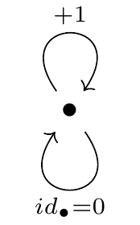

8 Mathematical theory
This chapter provides an overview of essential concepts from category theory and abstract algebra, as well as more general mathematics. Starting with some foundational topics, such as functions, relations, and orders, it slowly builds up to more advanced concepts such as categories, monoids, and functors. Readers familiar these concepts may feel free to skip ahead. However, even the fundamental concepts will be used throughout the thesis, so a refresher might be beneficial.
The material follows primarily from Fong and Spivak (2019), Lawvere and Schanuel (2009), Baez (2023), Pinter (2010), and Milewski (2018). For an accessible introduction to the topic, interested readers are encouraged to consult these references, particularly Fong and Spivak (2019) and Lawvere and Schanuel (2009).
8.0.0.1 Note on past applications of abstract algebra and category theory to data visualization
Category theory and abstract algebra have been applied to data visualization in the past. Handful of researchers have used these concepts to describe the broader philosophical aspects of data visualization. For example, Beckmann (1995), Hutchins (1999), and Vickers, Faith, and Rossiter (2012) had used concepts such as categories, functors, and algebras to lay down a theoretical framework for what it means to visualize. Similarly, Kindlmann and Scheidegger (2014) used functors to define valid perceptual representations of the data, and Hibbard, Dyer, and Paul (1994) used lattice theory to describe visualization in the presence of incomplete or approximate data (such as finite-precision floating-point numbers).
Other researchers have linked category theory and data visualization in a more applied context, by way of functional programming. Specifically, there have been a handful of functional libraries and domain-specific languages (DSLs) for data visualization developed over the recent years, which have used category theory as the foundational programming model. Examples include Yorgey (2012), Petricek (2021), Smeltzer, Erwig, and Metoyer (2014), and Smeltzer and Erwig (2018).
This thesis leverages category theory in a different way, by using it to shed light on certain practical problems that arise during (interactive) data visualization, without introducing a specific functional programming model or DSL. Specifically, the goal is to use concepts from category theory to reason about combinations of graphics, statistical summaries, and interactive features. Ultimately, I argue that these algebraic concepts are essential for reasoning about the coherence of interactive graphics.
And now for the theory.
8.0.1 Relations
A relation is one of the simplest mathematical structures. Given two sets \(X\) and \(Y\), a relation \(R\) between \(X\) and \(Y\) is a subset of the Cartesian product of the two sets, \(R \subseteq X \times Y\). In other words, a relation can be thought of as the subset of pairs \((x, y) \in X \times Y\) for which the condition “\(x\) and \(y\) relate” holds. Note that \(X\) and \(Y\) can be the same set, such that \(R \subseteq X \times X\).
There are many different types of relations. One of the most fundamental relations is equality; in this case, “\(x\) and \(y\) relate” means that, for our purposes, \(x\) and \(y\) are the same, i.e. \(x = y\). Other examples of relations include the usual order relations \(<\), \(\leq\), \(>\), or \(\geq\), and the divides operator \(\mid\) (\(x \mid y\) means “\(x\) divides \(y\) without remainder”).
Since a relation is a subset of the product set \(X \times Y\), we can visualize it as a matrix, with values of \(X\) as rows, values of \(Y\) as columns, and the related pairs \((x, y)\) marked out in some specific way. For example, here’s how we can display the order relation \(\leq\) on the set \(X = \{ 1, 2, 3 \}\):
Figure 8.1: A relation is a subset of the Cartesian product of two sets. The diagram shows the usual order relation \(\leq\). We can see that 1 is less than or equal to every other element, 2 is less than or equal to 2 and 3, and 3 is less than or equal to 3 only. Note the symmetry between rows and columns - this is due to the fact that the same set (\(X\)) is display on both dimensions.
A relation \(R\) can be signified with an infix symbol (such as \(\star\)), such that, if \(x\) and \(y\) relate, \((x, y) \in R\), then we write \(x \star_R y\) or \(x \star y\) (\(R\) implicit), for example, \(x = y\), \(x \leq y\), and so on. Alternatively, for less common types of relations, \(R\) can also be used as the infix symbol, such that \(x R y\) means “\(x\) and \(y\) relate under \(R\)”. If two elements do not relate, \((x, y) \not \in R\), we typically do not write this out explicitly - the lack of relation is indicated by its absence.
Relations can have properties. For example, some types of relations are reflexive, such that every element relates to itself: \(x \star x\) for all \(x \in X\). This is the case for equivalence relations. In fact, we can define equivalence relations using just three properties:
::: {.definition name=“Equivalence relation”} {#equivalence-relations} A relation \(\sim\) on \(X\) is called an equivalence relation if it is:
- Reflexive: \(x \sim x\) for all \(x \in X\)
- Symmetric: \(x \sim y\) if and only if \(y \sim x\) for all \(x, y \in X\)
- Transitive: if \(x \sim y\) and \(y \sim z\), then \(x \sim z\) :::
Equivalence relations encode the notion that two things are the same, for whatever our purpose is. We can further use them to assign objects in \(X\) to equivalence classes, which divide \(X\) into groups of equivalent objects:
Definition 8.1 (Equivalence class) Given a set \(X\) and an element \(a \in X\), an equivalence class of \(a\) is defined as follows:
\[[a] = \{ x \in X : x \sim a \}\]
While relations might seem like very simple constructions, they are incredibly versatile. The next few sections will discuss three important examples of relations: functions, partitions, and preorders.
8.0.2 Functions
A function is a special kind of relation which encodes a mapping between two sets. More specifically, let \(S\) be the set of sources (also called the domain) and \(T\) be the set of possible targets (also called the codomain). Then, we can think of a function as a relation \(F \subseteq S \times T\) of valid source-target pairs \((s, t)\), such that for every \(s \in S\) in there exists a unique \(t \in T\) with \((s, t) \in F\) (see Figure 8.2). In other words, every source relates to exactly one target:
![A function is a type of relation. Specifically, it is a subset of the Cartesian product of its domain ($S$) and codomain ($T$), such that each element in the domain marks out exactly one element in the codomain (shown in red). The depicted function has the following characteristics: $F: \{ 1, 2, 3 \} \to \{ 1, 2, 3 \}$, such that $F(1) = 1$, $F(2) = 1$, and $F(3) = 2$. One possible example of a function which conforms to this diagram might be $f(x) = \lfloor x / 2 \rceil$ (divide $x$ by two and round to the nearest whole number). Note that, for any function, each source maps to exactly one target (exactly one dot in each column), however, some targets may not be reached from any source and others may be reachable from many sources (zero or multiple dots in any row).](figures/functions-subset.png)
Figure 8.2: A function is a type of relation. Specifically, it is a subset of the Cartesian product of its domain (\(S\)) and codomain (\(T\)), such that each element in the domain marks out exactly one element in the codomain (shown in red). The depicted function has the following characteristics: \(F: \{ 1, 2, 3 \} \to \{ 1, 2, 3 \}\), such that \(F(1) = 1\), \(F(2) = 1\), and \(F(3) = 2\). One possible example of a function which conforms to this diagram might be \(f(x) = \lfloor x / 2 \rceil\) (divide \(x\) by two and round to the nearest whole number). Note that, for any function, each source maps to exactly one target (exactly one dot in each column), however, some targets may not be reached from any source and others may be reachable from many sources (zero or multiple dots in any row).
We can classify functions based on the shape of the relation between the domain and the codomain (see Figure 8.3). If every target in the function’s codomain has a path leading to it from some source, such that no target is unreachable, then we call the function surjective or onto. More formally:
Definition 8.2 (Surjectivity) A function \(f\) is surjective if, for all \(t \in T\), there exists a \(s \in S\) such that \(f(s) = t\).
Alternatively, if each source in the function’s domain leads to a unique target, such that no two sources map to the same target, then we call such a function injective or one-to-one. That is:
Definition 8.3 (Injectivity) A function is injective if, for all \(s_1, s_2 \in S\), if \(f(s_1) = t\) and \(f(s_2) = t\), then \(s_1 = s_2\).
Finally, if a function is both surjective and injective, meaning that every target can be reached from, and only from, a unique source, then we call such a function bijective or a bijection.
Definition 8.4 (Bijectivity) A function is a bijection and only if it is both surjective and injective, which is also the case if and only if it is invertible.
Figure 8.3: Types of functions. Left: in a surjective function, each target can be reached from some source. Middle: in an injective function, there is a unique source for each target. Right: in a bijection, each target can be reached from, and only from, a unique source.
8.0.2.1 More on bijections
Bijections are special since they encode the idea of reversible transformations. Any bijective function \(f\) has an associated inverse \(f^{-1}\) such that \(f^{-1}(f(x)) = x\) and \(f(f^{-1}(y)) = y\) for all \(x\) and \(y\) in the function’s domain and codomain, respectively. In other words, we can keep translating the value from the domain to codomain and back without losing any information. Later we will see that, when the elements \(x\) and \(y\) possess additional structure, we call a bijection that preserves this structure an isomorphism.
To give an example of a bijection, suppose I have a group of friends \(x \in X\) that each went to one city \(y \in Y\) in Europe during the holiday. I can construct a function \(f: X \to Y\) that sends each friend to his or her holiday destination. If every city \(y \in Y\) was visited by at least one friend, then the function is surjective. If each friend went to a different destination, then the function is injective. If both are true - that is, if every city on our list was visited by exactly one friend - then the function is bijective.
In the context of this example, a bijection means that we can just as well use the names of cities \(y \in Y\) when we speak of friends \(x \in X\). If Sam went to Rome, and he is the only person who went to Rome, I can say “the person who went to Rome” and it will be clear who I am talking about. Thus, bijections apply interchangeability and reversibility. Conversely, a lack of bijection implies that a transformation may lead to information loss. If two people went to Rome and I say “the person who went to Rome”, I am inevitably discarding the information about the identity of that person.
8.0.2.2 Composition
An important property of functions is that they can be composed. Specifically, if the domain of one function matches the codomain of another, the functions can be composed by piping the output of the first function as the input of the second. We then end up with a new, composite function:
Definition 8.5 (Function composition) Given two functions \(f: X \to Y\) and \(g: Y \to Z\), we can form a new function \(h: X \to Z\) by composing the two functions together such that:
\[h(x) = g(f(x))\]
There are several different ways to denote function composition. One is to write out the composition explicitly using the variable \(x\) as in the example above. However, mathematical texts often omit the explicit reference to the variable (\(x\)) and write the composition in one of several ways:
- \(h = g \circ f\) (read: “apply \(g\) after \(f\)”)
- \(h = gf\) (same as above)
- \(h = f ⨾g\) (read “apply \(f\) then \(g\)”)
Throughout this thesis, I will use the bracket notation (\(h(x) = g(f(x))\)) when explicitly referring to the variable, and the postfix/fat semicolon notation (\(h = f ⨾g\)) otherwise.
Surjectivity, injectivity, and bijectivity propagate through composition: composition of two surjective functions is surjective, composition of two injective functions is injective, and composition of two bijective functions is bijective. However, the converse does not necessarily hold: a bijective function does not have to be composed of two bijections:
Figure 8.4: A bijection does not necessarily have to be composed of bijections. The function \(f\) is not surjective, and the function \(g\) is not injective, nevertheless, their composition \(f ⨾g\) yields a bijective function.
For other interesting examples of inverse function composition problems, see Lawvere and Schanuel (2009).
8.0.2.3 The image and the pre-image
There are other things we can do with functions. For example, given a subset of sources, we can ask about the image - the set of targets we can reach from those sources:
Definition 8.6 (Image) For some subset \(S_i \subseteq S\), its image under \(f\) is defined as \(f_!(S_i) = \{ f(s) \in T \lvert s \in S_i \}\).
Likewise, given a subset of targets, we can ask about the pre-image - the set of sources that could have produced those targets. That is:
Definition 8.7 (Pre-image) For some subset \(T_i \subseteq T\), its pre-image under \(f\) is defined as \(f^*(T_i) = \{ s \in S \lvert f(s) \in T_i \}\).
An important fact to note is that, although the pre-image \(f^*\) is also sometimes called the “inverse image”, it is not the inverse of the image \(f_!\), for most functions (ones which are not bijections). That is, by applying the pre-image after image or vice versa, we cannot expect to always come up with the same set as we started with. Specifically, if we have a non-injective function and apply the pre-image after the image, we may come up with more sources that we started with, \(S_i \subseteq f^*(f_!(S_i))\) (equality if injective), and similarly, if we have a non-surjective function and apply the image after the pre-image, we might end up with fewer targets than we started with, \(f_!(f^*(T_i)) \subseteq T_i\) (again, equality if surjective).
As an example, suppose again I have the function \(f\) which maps each friend to a holiday destination. The image of that function, \(f_!\), maps a set of friends to the set of all cities that at least one of them went to, and similarly, the pre-image, \(f^*\), maps a set of cities to the set of friends that went to them.
Now, suppose that Sam and Dominic went to Rome, and I ask:
“who went to [the city that Sam went to]?”
I will get both Sam and Dominic back, since:
\[f^*(f_!(\{ Sam \})) = f^*(\{ Rome \}) = \{ Sam, Dominic \}\]
That is, I will get back Sam and Dominic even though I had initially only asked about Sam. Similarly, if no friends had visited Paris and I ask:
“what are the cities that [people who went to Paris or Rome] went to?”
then I will get Rome only, since
\[f_!(f^*(\{Paris, Rome \})) = f_!(\{ Sam, Dominic \}) = \{ Rome \}\]
This odd relationship between the the image and the pre-image is due to the fact that the image is actually something called left adjoint (Baez 2023; Fong and Spivak 2019). Adjoints can be thought of as the “best approximate answer to a problem that has no solution” (no inverse, Baez 2023), and they come in pairs - a left and a right adjoint - with the left adjoint being more permissive or “liberal” and the right adjoint being more strict or “conservative” (Baez 2023). Proper treatment of adjoints is beyond the scope of this thesis, however.
8.0.3 Partitions
Another interesting simple mathematical constructions are partitions. Like functions, partitions are a type of relation, and can in fact be constructed using functions. That is, if we have a “labeling” function \(f\), we can construct a partition as follows:
Definition 8.8 (Partition as function) Given some set \(X\), a set of part labels \(P\), and a surjective function \(f: X \to P\), we can partition \(A\) by assigning every element \(x \in X\) a part label \(p \in P\), by simply applying the function: \(f(x) = p\).
We can also define partitions using equivalence classes. By taking any part label \(p \in P\), we can recover the corresponding subset of \(X\) by pulling out its pre-image: \(f^*(\{p\}) = X_p \subseteq X\). We can then define a partition without reference to \(f\):
Definition 8.9 (Partition as equivalence class) A partition of \(A\) consists of a set of part labels \(P\), such that, for all \(p \in P\), there is a non-empty subset \(A_p \subseteq A\) which forms an equivalence class on \(A\) and:
\[X = \bigcup_{p \in P} X_p \qquad \text{and} \qquad \text{if } p \neq q, \text{ then } X_p \cap X_q = \varnothing\] I.e. the parts \(X_p\) jointly cover the entirety of \(X\) and parts cannot share any elements.
We can rank partitions by their coarseness. For any set \(X\), the coarsest partition is one with only one part label \(P = \{ 1 \}\), such that each element of \(X\) gets assigned \(1\) as label. Conversely, the finest partition is one where each element gets assigned its own unique part label, such that \(\lvert X \lvert = \lvert P \lvert\).
Given two partitions, we can form a finer (or at least as fine) partition by taking their intersection, i.e. by taking the set of all unique pairs of labels that co-occur for any \(x \in X\) as the new part labels. For example, suppose \(X = \{ 1, 2, 3 \}\) and partition 1 assigns part labels:
\[p_1(x) = \begin{cases} a & \text{if } x = 1 \text{ or } x = 2 \\ b & \text{if } x = 3 \end{cases}\]
and partition 2 assigns part labels the following way:
\[ p_2(a) = \begin{cases} s & \text{if } x = 1 \\ t & \text{if } x = 2 \text{ or } x = 3 \end{cases} \]
Then the intersection partition will have the following part labels \(P_3 = \{ (a, s), (a, t), (b, t) \}\) such that:
\[ p_3(a) = \begin{cases} (a, s) & \text{if } x = 1 \\ (b, s) & \text{if } x = 2 \\ (b, t) & \text{if } x = 3 \end{cases} \]
8.0.4 Preorders
Another important class of relations are ones that have to do with order. Among these, one of the simplest constructions is a preorder:
Definition 8.10 (Preorder) A preorder is a set \(X\) equipped with a binary relation \(\leq\) that conforms to the following two properties:
- Reflexivity: \(x \leq x\) for all \(x \in X\)
- Transitivity: if \(x \leq y\) and \(y \leq z\), then \(x \leq z\), for all \(x, y, z \in X\)
Simply speaking, this means that, if we pick any two elements in the set \(X\), they either relate and one element is “less than or equal to” the other (in whatever sense we care about), or they do not relate at all.
One simple example of a preorder is the family tree, see Figure 8.5. Here, the underlying set is the family: \(X = \{ \text{daughter, son, mother, father, grandmother, ...} \}\) and the binary relation is ancestry or familial relation. Thus, for example, \(\text{daughter} \leq \text{father}\), since the daughter is related to (is offspring of) the father, and \(\text{father} \leq \text{father}\), since a person is related to themselves (for the sake of this example). However, there is no relation (\(\leq\)) between \(\text{father}\) and \(\text{mother}\) since they are not related. Finally, since \(\text{daughter} \leq \text{father}\) and \(\text{father} \leq \text{grandmother}\), then, by reflexivity, \(\text{daughter} \leq \text{grandmother}\).
Figure 8.5: An example of a simple preorder: family tree ordered by familial relation.
Another common example of a preorder is the set of natural numbers \(\mathbb{N}\), ordered by the usual order relation, or by the division relation: \(x \leq y\) iff \(x \mid y\) (\(x\) divides \(y\) without remainder).
8.0.4.1 Specializing preorders
We can specialize preorders by imposing additional properties, such as:
- If \(x \leq y\) and \(y \leq x\), then \(x = y\) (anti-symmetry)
- Either \(x \leq y\) or \(y \leq x\) (comparability)
If a preorder conforms to property 3, we speak of a partially ordered set or poset. If it conforms to both 3 and 4, then it is called a total order.
8.0.4.2 Structure preserving maps: Monotone maps
Preorders are interesting because they give us a first taste of something will be discussed a lot throughout this thesis: structure-preserving maps. Specifically, if we have two preorders \((X, \leq_X)\) and \((Y, \leq_Y)\), and a function \(f: X \to Y\), we can classify this function based on whether it preserves the order in \((X, \leq_X)\) or not. That is, we call a function \(f\) order-preserving or a “monotone map”, if:
Definition 8.11 (Monotone map) A monotone map \(f: X \to Y\) is a function between two preorders \((X, \leq_X)\) and \((Y, \leq_Y)\), such that, for all \(x_1, x_2 \in X\):
\[\text{if} \;\; x_1 \leq_X x_2 \;\; \text{then} \;\; f(x_1) \leq_Y f(x_2) \]
For example, suppose we are interested in the set of functions \(\mathbb{R} \to \mathbb{R}\) mapping from and to the preorder of reals ordered by the usual order relation \(\leq\), \((\mathbb{R}, \leq)\). Then, the function \(f(x) = \log(x)\) is an example of a monotone map, since:
\[\text{if} \;\; x_1 \leq_{\mathbb{N}} x_2 \;\; \text{then} \;\; \log(x_1) \leq_{\mathbb{R}} \log(x_2)\]
Other examples of monotone maps \(\mathbb{R} \to \mathbb{R}\) include linear functions of the form \(y = ax + b\) where \(a \geq 0\). However, there are many other types of functions which do not preserve order, e.g. \(g(x) = \sin(x)\) or \(h(x) = -x\). Finally, to give an example of a function with different domain and codomain from \(\mathbb{R}\), if we take as our domain the powerset of some set \(X\), ordered by inclusion relation, \((\mathcal{P}(X), \leq)\), then one simple order preserving map \(\mathcal{P}(X) \to \mathbb{N}\) is the function which simply returns the .
Monotone maps compose: if \(f: X \to Y\) is a monotone map, and \(g: Y \to Z\) is a monotone map, then their composite \(h: X \to Z\) is also a monotone map. Further, if there are two monotone maps \(f: X \to Y\) and \(g: Y \to X\) which are inverses to each other, then we speak of a order isomorphism. That is, if an bijective function \(f: X \to Y\) not only preserves the identity of the elements, but also the fundamental structure (order), then \((X, \leq)\) and \((Y, \leq)\) are in some sense interchangeable.
8.0.5 Monoids
In the previous subsection, we discussed one example of taking a set and imposing some kind of structure on it: namely, we took a set and imposed an order relation on it and called the result a preorder. However, we can impose many other kinds of structure on collections of objects (sets). One such type of a structure is a monoid.
A monoid is an algebraic structure that represents a “whole equal to the sum of its parts”, if we relax our idea about what it means to “sum”. More formally:
Definition 8.12 (Monoid) A monoid is a tuple \((M, e, \otimes)\) consisting of:
- A set of objects \(M\)
- A neutral element \(e\) called the monoidal unit
- A binary operation (function) \(\otimes: M \times M \to M\) called the monoidal product
Such that the binary operation \(\otimes\) has the following properties:
- Unitality: \(m \otimes e = e \otimes m = m\) for all \(m \in M\)
- Associativity: \(m_1 \otimes (m_2 \otimes m_3) = (m_1 \otimes m_2) \otimes m_3 = m_1 \otimes m_2 \otimes m_3\) for all \(m_1, m_2, m_3 \in M\)
In simple terms, when we have a monoid \((M, \otimes, e)\), we have some elements \(m \in M\) and a way to combine them, such that, when we combine the same group of elements, we always get back the same result, no matter in what order we do it in (associativity: brackets do not matter). We also have some neutral element \(e\) that, when combined with any other element, does nothing and simply yields back the original element.
Theorem 8.1 (Uniqueness of the neutral element) The neutral element in a monoid is always unique.
Proof: suppose \(e_1\) and \(e_2\) are elements in \(M\) that have the unital property. Then \(e_1 \otimes e_2 = e_1\) but also \(e_1 \otimes e_2 = e_2\) (treating either as “the” neutral element). So, \(e_1 = e_2\).
8.0.5.1 Simple examples of monoids
One common example of a monoid is summation on natural numbers (including zero), \((\mathbb{N}, 0, +)\):
\[\begin{align} 1 + 0 = 0 + 1 = 1 & \qquad \text{(unitality)} \\ 1 + (2 + 3) = (1 + 2) + 3 = 1 + 2 + 3 & \qquad \text{(associativity)} \end{align}\]
Another example of a monoid are products of real numbers \((\mathbb{R}, 1, \times)\):
\[\begin{align} 1 \cdot 2 = 2 \cdot 1 = 2 & \qquad \text{(unitality)} \\ 2 \cdot (2 \cdot 3) = (1 \cdot 2) \cdot 3 = 1 \cdot 2 \cdot 3 & \qquad \text{(associativity)} \end{align}\]
Even the maximum and minimum operators are monoids, as long as we take the extended real/natural numbers as our set \(M\). Here’s an example with the maximum operator on the extended real number line, \((\mathbb{R}, -\infty, \max)\):
\[\begin{align} \max(x, -\infty) = \max(-\infty, x) = x & \qquad \text{(unitality)} \\ \max(x, \max(y, z)) = \max(\max(x, y), z) & \qquad \text{(associativity)} \end{align}\]
However, there are also many mathemamatical operators which do not conform to the definition of a monoid. One such counterexample is exponentiation. Exponentiation does not meet the definition of a monoid, since it is not associative:
\[x^{(y^z)} \neq (x^y)^z\]
and there is no two-sided neutral element:
\[x^1 = x \qquad \text{but} \qquad 1^x \neq x\]
Likewise, the operation of taking an average of two numbers is not associative:
\[\frac{\frac{x + y}{2} + z}{2} \neq \frac{x + \frac{y + z}{2}}{2} \\\]
And there is no neutral element since there is no number that we could average \(x\) with to get back the same value (that does not depend on \(x\)):
\[\not\exists c \; \text{s.t.} \; \frac{x + c}{2} = x\]
Therefore, the average operator is not a monoid either.
8.0.5.2 Beyond numbers
However, the definition of a monoid is broader than just simple operations on numbers, and can extend to far more exotic structures. For example, multiplication of \(n \times n\) square matrices \((\mathbf{M}_{n \in \mathbb{Z}}, \mathbf{I}, \cdot)\), is a monoid. Also, the operation of appending a value to a vector and taking the Euclidean norm can too be recast as a monoid (Stepanov and McJones 2009):
\[||(||(x, y)||_2, z)||_2 = \sqrt{\bigg(\sqrt{(x^2 + y^2)}\bigg)^2 + z^2} = \sqrt{(x^2 + y^2) + z^2} = ||(x, y, z)||_2\]
Even completely non-number like entities can form monoids. For example, the operation of concatenating strings is a monoid, since it is associative and comes equipped with a neutral element (the empty string):
\[\begin{align} \text{"hello"} + \text{""} = \text{""} + \text{"hello"} = \text{"hello"} & \qquad \text{(unitality)} \\ (\text{"quick"} + \text{"brown"}) + \text{"fox"} = \text{"quick"} + (\text{"brown"} + \text{"fox"}) & \qquad \text{(associativity)} \end{align}\]
Likewise, the concatenation of lists or arrays also forms a monoid (see Milewski 2018).
8.0.5.3 Specializing monoids
As with preorders, we can make more specialized version of monoids by imposing additional properties. One such property is commutativity:
- Commutativity: \(m_1 \otimes m_2 = m_2 \otimes m_1\) for all \(m_1, m_2 \in M\)
Both associativity and commutativity can both be viewed as saying “order does not matter” in some sense, however, they are fundamentally different. While associativity is about the “temporal” order of operations, commutativity is about the “spatial” order of terms. Let’s illustrate this on an example.
Suppose we have three wires of different colours \(\{ \text{red}, \text{green}, \text{blue} \}\). We can connect these wires, and let’s call this operation our monoidal product. Let’s also imagine that the \(\text{red}\) wire is connected to a power source and the \(\text{blue}\) wire is connected to a light bulb, and the \(\text{green}\) wire amplifies the current from the power source such that it is enough to power the light bulb. To turn on the lightbulb, we need to connect the wires in the following order: \(\text{red} \to \text{green} \to \text{blue}\). The temporal order in which we do this does not matter: we can connect \(\text{green} \to \text{blue}\) first and \(\text{red} \to \text{green}\) second or vice versa, either way we get the same result (the lightbulb turns on). However, the spatial order in which we connect the wires does matter: if we connect \(\text{red} \to \text{blue}\), then the current will not be enough to power the light bulb. Hence, the operation is associative (temporal order does not matter) but not commutative (spatial order matters).
Further interesting kinds of structure can arise when the set \(M\) is itself a part of a preorder \((M, \leq)\). Then, we may want the monoidal product to be monotonic, such that it does not break the ordering imposed by \(\leq\):
- Monotonicity: \(m_1 \leq m_1 \otimes m_2\) and \(m_2 \leq m_1 \otimes m_2\) for all \(m_1, m_2 \in M\)
This means that when we combine two things, we get back something that’s at least as big as the bigger of the two things. Summation of natural numbers \((\mathbb{N}, \leq, 0, +)\) again works, but for example summation of integers \((\mathbb{Z}, 0, +)\) or multiplication of reals \((\mathbb{R}, \leq, 1, \times)\) does not.
Mathematicians tend to give these structures with different sets of properties different names. For example, the tuple \((M, \leq, e, \otimes)\), where the monoidal product \(\otimes\) has the properties of unitality, associativity, commutativity, and monotonicity is called a symmetric monoidal preorder (Fong and Spivak 2019). For our purposes here, I will not dive too deep into this taxonomy, however, interested reader should consult Fong and Spivak (2019) or nLab.
8.0.5.4 Structure preserving maps: Monoid homomorphisms
As with preorders, when we have functions which map from one monoid to another, we can ask whether they preserve properties we care about. Before, this was order; now, we want the operations to preserve the fundamental properties of the monoidal product, unitality and associativity:
Definition 8.13 (Monoid homomorphism) Let \((M, e_M, \otimes_M)\) and \((N, e_N, \otimes_N)\) be monoids. A function \(f: M \to N\) is called a monoid homomorphism if it:
- Preserves product: \(f(m_1 \otimes_M m_2) = f(m_1) \otimes_N f(m_2)\)
- Preserves unitality: \(f(e_M) = e_N\)
(technically, 2. can be deduced from 1., if we let \(m_1\) or \(m_2\) equal \(e_M\))
To give an example of a monoid homomorphism, suppose that our first monoid is string concatenation, \((String, "", ++)\) and the second is natural numbers with addition, \((\mathbb{N}, 0, +)\). Then, one simple monoid homomorphism \(f\) is simply counting the number of characters in a string:
\[10 = f(\text{"helloworld"}) = f(\text{"hello"} \text{++} \text{"world"}) = f(\text{"hello"}) + f(\text{"world"}) = 5 + 5\] \[e_N = 0 = f("") = f(e_M)\]
Like monotone maps, monoid homomorphisms also compose. Proof: suppose \(f: X \to Y\) and \(g: Y \to Z\) are monoid homomorphisms. Then the composite function \(f ⨾g\) preserves the product:
\[\begin{align} (f ⨾g)(x_1 \otimes x_2) & = g(f(x_1 \otimes_X x_2)) \\ & = g(f(x_1) \otimes_Y f(x_2)) \\ & = g(f(x_1)) \otimes_Z g(f(x_2)) \\ & = (f ⨾g)(x_1) \otimes_Z (f ⨾g)(x_2) \end{align}\]
As well as the identity element:
\[(f ⨾g)(e_X) = g(f(e_X)) = g(e_Y) = e_Z\]
And again, as with monotone maps, if we have two monoid homomorphisms which form a bijection, we can speak of a monoid isomorphism. A famous example is the bijection between multiplication of real numbers \((\mathbb{R}, 1, \cdot)\) and the summation of real numbers \((\mathbb{R}, 0, +)\), where the monoid homomorphisms are \(f(x) = \log(x)\) and \(g(y) = e^y\).
8.0.6 Groups
Another well-known example of algebraic structures are groups. Groups are studied in group theory, and encode the idea of reversible transformations and symmetry. Despite the difference in term, groups are really just a monoid with one additional property:
Definition 8.14 (Group) A group is a monoid with an inverse operator. Specifically, as with a monoid, we have the tuple \((G, e, \otimes)\), which includes a set \(G\), a neutral element \(e\), and a product \(\otimes\), and the product fullfills the following properties:
- Unitality: \(g \otimes e = e \otimes g = g\), for all \(g \in G\)
- Associativity: \(g_1 \otimes (g_2 \otimes g_3) = (g_1 \otimes g_2) \otimes g_3 = g_1 \otimes g_2 \otimes g_3\), for all \(g_1, g_2, g_3 \in G\)
Additionally, the monoidal product \(\otimes\) has an inverse1 \(\otimes^{-1}\), such that the following property holds:
- Invertibility: \(g \otimes^{-1} g = g^{-1} \otimes g = e\), for all \(g \in G\)
Invertibility implies that, when we take a product of any two elements, we can always recover either element by “subtracting away” the other via the inverse product. This means that the group transformations are, in a sense, “lossless” - after we apply a transformation, we can always revert back to the original state by applying the inverse.
8.0.6.1 Simple examples of groups
To give a concrete example, summation of integers \((\mathbb{Z}, 0, +)\) is a group2, since, when we sum two integers, we can always recover either summand by subtracting away the other from the result:
\[x + y = z \implies z - x = y \wedge z - y = x\]
Other popular examples of groups include the groups of symmetries of geometric objects, such as a rectangle and triangle (these are also called the dihedral groups of order 2 and 6 respectively, see Pinter 2010). Other important class of groups are permutation groups, which are groups where the elements \(g \in G\) are permutations of some underlying set \(X\) and the group product is given by composition (in fact, as we will see below, every group is isomorphic to some permutation group).
To give some examples of structures which are not groups, we could use the same counterexamples as we did with monoids, of operations which are not associative and/or do not come equipped with a neutral element. However, far more interesting are monoids which without an inverse element. One such counterexample is the maximum operator \((\mathbb{R}, -\infty, \max)\).
Suppose \(\max(x, y) = x\). Is there any way to recover \(y\) from this formula, if we know \(x\)? No. The monoidal product “collapses” the information contained in either element, and there is no way to revert this transformation.
8.0.6.2 Structure preserving maps: Group homomorphisms
Like with monoids, groups can be transformed in ways that respect the group structure. Most of the setup is the same as it was for monoids, in Section 8.0.5.4, however, there is one more requirement on the function \(f: G \to H\):
Definition 8.15 (Group homomorphism) Group homomorphism is a monoid homomorphism where the product \(\otimes\) has one additional property:
- Preserves inverses3: \(f(e_G \otimes^{-1} g) = e_H \otimes^{-1}f(g)\)
Again, like with monoids, if a group homomorphism \(f: G \to H\) is a bijection, then we speak of a group isomorphism.
8.0.7 Categories
While discussing mathematical structures like preorders, monoids, and groups, some common have been cropping up: namely, structure, equality, and structure-preserving maps. Now it is time to shift gears and define these common themes more generally. To do this, we can make use of one powerful concept: categories (Fong and Spivak 2019; Lawvere and Schanuel 2009).
Definition 8.16 (Category) To define a category \(\mathcal{C}\), we specify:
- A collection of objects \(\text{Ob}(\mathcal{C})\)
- For every two objects \(c, d \in \text{Ob}(\mathcal{C})\), we define a set of morphisms (arrows) \(\mathcal{C}(c, d)\)
- For any object \(c \in \text{Ob}(\mathcal{C})\), we define a special morphism \(\text{id}_c \in \mathcal{C}(c, c)\), called the identity morphism
- For every three objects \(c_1, c_2, c_3 \in \text{Ob}(\mathcal{C})\) and two morphisms \(f \in \mathcal{C}(c_1, c_2)\) and \(g \in \mathcal{C}(c_2, c_3)\), we define a composite morphism \(f ⨾g \in \mathcal{C}(c_1, c_3)\)
Such that the composition operation is:
- Unital: \(\text{id}_{c_1} ⨾f = f\), and \(f ⨾\text{id}_{c_2}=f\)
- Associative: \((f ⨾g) ⨾h = f ⨾(g ⨾h) = f ⨾g ⨾h\)
(for all \(f \in \mathcal{C}(c_1, c2)\), \(g \in \mathcal{C}(c_2, c3)\), and \(f \in \mathcal{C}(c_3, c4)\), and \(c_1, c_2, c_3, c_4 \in \text{Ob}(\mathcal{C})\))
In simple terms, when we have a category says, we have some objects \(c \in \text{Ob}(\mathcal{C})\) which relate to each other via the morphisms, and these morphisms obey some common sense properties. First, the morpshisms compose: if we can get from \(c_1\) to \(c_2\) and \(c_2\) to \(c_3\), we can get from \(c_1\) to \(c_3\). Second the composition is associative, meaning that the order in which we compose does not matter. Finally, we always have a way of “staying in the same place”, which is the identity morphism.
To give a concrete example, here is a diagram of a simple category with two objects and a non-identity morphism, typically denoted as \(\underline{\textbf{2}}\):

The properties of a category simply tells us that staying in one place before or after moving to a different place is that same as just moving, \(\text{id}_1 ⨾f = f ⨾\text{id}_2 = f\), and that how we choose to “lump” the different parts of our journey together does not matter, \((\text{id}_1 ⨾f) ⨾\text{id}_2 = \text{id}_1 ⨾(f ⨾\text{id}_2)\).
The power of categories is their flexibility. This lies in the definitions of “objects” and “morphisms”, which are left vague on purpose. The result is that we can use categories to define a broad class of structures, even very simple, familiar one. For instance, we could define a category where the objects can be elements in a set, and the morphisms can serve as indicator of some kind of relationship. Then the category would encode a relation.
However, there is nothing stopping us from defining categories with more complex objects and relations. For example, as we will see, it is possible to define categories where the objects themselves are other categories, and the morphisms are transformations between categories.
8.0.7.1 Isomorphisms within categories
Before we go on to discuss specific examples of categories, there is one more important concept we need to mention. So far, we have been speaking of isomorphisms in fairly vague terms, as bijections which “preserve structure”. Now it is time to define what this structure-preserving bijection means, and categories provide one way of doing just this:
Definition 8.17 (Isomorphism) Within a category, a morphism \(f: x \to y\) is called an isomorphism if there exists another morphism \(g: y \to x\) such that:
- \(f ⨾g = \text{id}_X\)
- \(g ⨾f = \text{id}_Y\)
\(f\) and \(g\) are then inverses to each other, such that \(f = g^{-1}\) and \(g = f^{-1}\), equivalently.
Notice that the definition above is similar to that of a bijection, however, we are gently stripping away reference to specific elements, such as with \(g(f(x)) = x\) and are instead only referring to the morphisms \(f ⨾g = id_{x}\). While this difference might seem superficial, it is important, because it turns out we can encode more information in morphisms than we can in elements. Specifically, while before we talked about transformations which preserve the identity of elements and some additional structure, defining isomorphisms purely in terms of morphisms allows us to do away with this distinction.
Note that I have mentioned that the definition above is one way of defining isomorphisms, within a category. Without getting ahead of ourselves too much, it turns out there is another way of defining isomorphisms, between categories. This duality of definition of isomorphism does not cause problems, since, as was mentioned above, the definition of a category is broad enough such that the objects in a category can be other categories, and the morphisms can be transformations between categories. More on this later.
8.0.7.2 Algebraic structures as categories
It might not seem that the broad, abstract definition of a category can buy us much. However, as we will see, it allows us to reason about all of the algebraic structures we have discussed so far. To start off:
Proposition 8.1 A preorder is a category where there is at most one morphism between any two objects.
Before, we defined a preorder as tuple consisting of a set and a relation, \((X, \leq)\). Further, we had to specify two additional properties that the relation has to uphold: namely, reflexivity and associativity.
It turns out, if we define preorder as a category with at most one morphism between each pair of objects, the properties of reflexivity and associativity automatically fall out of the definition. Specifically, let the elements \(x \in X\) be the objects in the category \(\mathcal{X}\) corresponding to the preorder \((X, \leq)\), and let the relation \(\leq\) be represented by presence of a morphism between two objects (of which can there be only one).
- Reflexity: \(x \leq x\) for all \(x \in X\). This is just the identity morphism \(\text{id}_x\), which always exists and is the only morphism in \(\mathcal{X}(x, x)\) for all \(x \in X = \text{Ob}(\mathcal{X})\)
- Associativity: \(x \leq y\) and \(y \leq z\) \(\implies x \leq z\). This is the consequence of associativity of composition in categories: if there is a morphism \(x \to y\) and \(y \to z\), then we automatically get a morphism \(f ⨾g: x \to z\).
The example above of casting a preorder as a category was fairly intuitive, since the elements \(x \in X\) mapped to objects and the relation \(\leq\) mapped to morphisms. However, with other types of algebraic structures, the mapping can be a bit more intricate. For example:
Proposition 8.2 A monoid is a category with a single object.
Here, we need to break away from the intuitive way of thinking of objects as elements in a set and morphisms as functions, and instead take a more creative approach. Specifically, we can take a monoid \((M, e, \otimes)\) and define it as a category with a single “dummy” object and morphisms to and from this object. For example, here’s how we can define summation of natural numbers \((\mathbb{N}, 0, +)\) as a category:

Here, the object in the category does not really represent anything, and all of the information is encoded in morphisms and their composition. Specifically, the identity morphism is equal to the monoidal unit zero, and the only other morphism, \(1\), represents the number one. Composition of morphisms represents addition. Then, any natural number \(n \in \mathbb{N}\) can be represented as a composition of arrows, \(1 = 1\), \(2 = 1 ⨾1\), \(3 = 1 ⨾1 ⨾1\), etc… (this is in fact similar to Peano axiomatization of natural numbers, see Stepanov and Rose 2014).
Proposition 8.3 A group is a category with one object where every morphism is an isomorphism
8.0.8 Functors
Now it is time for a precise and general definition of structure preserving maps. This is what a functor is.
Definition 8.18 (Functor) Given two categories \(\mathcal{C}\) and \(\mathcal{D}\), to specify a functor \(F: \mathcal{C} \to D\), we define:
- For every object \(c \in \text{Ob}(\mathcal{C})\), an object \(F(c) \in \text{Ob}(\mathcal{D})\)
- For every morphism \(f: c_1 \to c_2\) in \(\mathcal{C}(c_1, c_2)\), a morphism \(F(f): F(c_1) \to F(c_2)\)
Such the action of the functor \(F\) on the morphisms in \(\mathcal{C}\):
- Preserves identities: for every object \(c \in \text{Ob}(\mathcal{C})\), \(F(\text{id}_c) = \text{id}_{F(c)}\)
- Preserves composition: for every three objects \(c_1, c_2, c_3 \in \text{Ob}(\mathcal{C})\) and two morphisms \(f: c_1 \to c_2\) and \(g: c_2 \to c_3\), \(F(f ⨾g) = F(f) ⨾F(g)\)
References
Note, that in group theory, it is common to omit explicit references to the operator and write the group products without it, such that, e.g. \(g \otimes h\) is written as \(gh\). In that case, instead of the inverse operator, we speak of inverse elements, such that, for each \(g \in G\) there is an \(g^{-1}\) such that \(g^{-1}g = gg^{-1} = e\). However, this really is a distinction without difference since we can easily define the inverse element using the inverse operator and the neutral element: \(g^{-1} = (e \otimes^{-1}g)\). Thus, for the sake of keeping with the notation in the previous sections, I will use the inverse operator explicitly.↩︎
Again, in group theory, the unit and the product are often referred to only implicitly, so we would instead just speak of the “group of integers \(\mathbb{Z}\)”↩︎
Alternatively, we can denote the same property without reference to the unit and the group product as: \(f(g^{-1}) = f(g)^{-1}\). Arguably, here it leads to a nicer definition, however, again, I decided to use the explicit formulation for sake of consistency.↩︎